|
|
| Elliott Sound Products | Development of a Free Pendulum Clock |
By Rod Elliott
Last Updated 16 May 2010
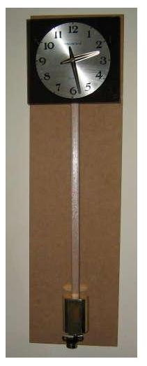 So, what is a "free pendulum clock" when it's at home? Simply, this means that the pendulum is free of any requirement to perform "work", such as advancing the movement. It may be considered that mechanical clocks fulfil this function - after all, the movement powers the clock, not vice versa. However, there are countless small losses in the going train, and the escapement may not impulse the pendulum at exactly the right place ... many don't. Mechanical movements have to be very finely made to allow reliable operation and minimal pendulum swing. The majority of clocks have considerable overswing, and this is a requirement for reliable operation unless the movement is of very high precision.
A free pendulum clock will usually be electrically powered, and the pendulum can be impulsed by any number of means (see the article on Clock Motors for more information. The most accurate mechanical pendulum clocks ever made were of the "free pendulum" variety, but there are few new attempts to create a very accurate pendulum based clock. After all, quartz clocks are far more accurate than 99% of mechanical clocks, but they are completely charmless.
This article describes the development of my free pendulum clock, and shows the final workings. At the time of writing and as shown on the left, the clock was simply mounted on a back-board without any housing for a long term timing test (worst case), but a proper cabinet will be made when time permits.
How is this a worst case test? The clock is mounted with no case, next to a door that is opened and closed fairly regularly. Breeze and other disturbances will have their maximum effect. The room it's in also gets cold at night, and often gets quite hot during the day - especially in summer which is coming up soon (as of the time of writing at least). This will exercise the clock over a wide temperature range, and with regular (air) disturbance to the pendulum. These conditions are definitely worst case.
The pendulum is impulsed by the motor coil visible at the very bottom (below the pendulum), and a small magnet is attached to the tip of the pendulum rod. Total swing is about ±15mm (30mm total). The short swing is deliberate, and minimises "circular error". This is an error introduced because a pendulum's periodic time is not independent of arc length (as is commonly believed and taught at school). Long swings take slightly more time to complete, but the time is not consistent. A long swing also means the pendulum has to move faster, thus increasing air resistance losses, and requiring more input power to maintain the swing.
The electronics that drive the pendulum and the clock motor are behind the clock face, and are described in more detail below. Each major part of the clock is covered in this article, allowing anyone who wants to make one to do so. The only slightly difficult part is programming the PIC (a single programmable IC that drives the entire clock). For anyone who is interested, the code for a 1 second pendulum is provided below.
An interesting phenomenon was found after having run the clock for a few months. The small arc of the pendulum may look good, but it makes the clock a useless timekeeper. In order for the clock to keep time, it has been found necessary to increase the swing by moving the motor coil closer to the magnet. My initial guess as to the reason is just that ... a guess, but it seems to make sense based on other magnetically pulsed clocks.
The pendulum's swing has to be large compared to the impulse period. The greater the difference, the better the timekeeping will be. When the arc is small, the impulse (albeit small) acts over a significant amount of the arc. When the arc length is increased, the impulse acts on a much smaller segment of the arc, allowing the pendulum to be truly "free" for a longer period.
An alternative approach is to apply the impulse on (for example) every 10th swing. Even though the pulse applied is very weak, it is more than sufficient to disrupt the natural period of the pendulum unless the ratio of impulse to arc is kept as small as possible. The original arc was about 24mm end-to-end, and the pendulum period is 0.8s (800ms). The impulse lasts 50ms, so is 0.0625 of 800ms. Clock people invariably refer to the semi-arc of a pendulum, because this is the period between escapement releases (tick and tock). The actual period is one complete swing, which for this clock takes 1.6 seconds. The maximum velocity of the pendulum increases as the arc length is made larger ...
The maximum velocity of a simple pendulum with amplitude A and a (full) period of t is 2 * π * A / t
For a 24mm swing, this equates to 94mm/s, and for a 90mm swing it's 353mm/s
It may not be immediately obvious, but if the impulse lasts for 50ms in each case, the length of the arc affected by the impulse is smaller as arc length increases. This is because the magnet has left the influence of the motor coil well before the impulse is complete - although I've not tried it, I suspect that the 50ms impulse used at present could be reduced significantly without loss of arc length. In addition, the higher velocity of the larger arc is harder to disturb by the impulse. This would appear to be one reason that magnetically impulsed clocks usually have a large arc - look at the arc length vs. pendulum length of clocks like the Kundo Electronique for example. There are others reasons too, but they are more applicable to older technology - the high speed pendulum generates a higher voltage that's easier to sense. This is not an issue with the PIC based circuit I used.
The plan from the outset was to use a magnetic repulsion motor. An early trial consisted of a pendulum from an old Korean wall clock mounted on a test stand, and powered by a quartz clock pendulum motor. This sat on a cabinet in the dining room swinging away happily (but pointlessly) for several months before I got to the next stage - making a "real" motor. The new motor unit consisted of a two transistor circuit. This was independently designed, but ended up being very similar to the two transistor Kundo motors, but is used with a stationary coil beneath a magnet on the pendulum.
The motor housing and top mounting block were fabricated from modified brass drawer pulls, obtained from the local hardware store. These were cut in half, and the loop rotated 180° for the motor, and only the mounting plate was used for the top block. The motor coil is shown below.
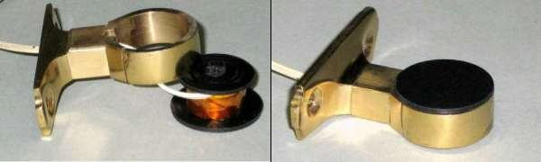
Figure 2 - Motor Coil And Housing
In both views you can see that the loop containing the motor coil was cut with a jeweller's saw to prevent the creation of a short circuit around the coil itself. The latter just drops into the loop, and the wiring is brought out through a hole drilled through the mounting plate, extension piece and loop. The coil itself consists of about 2,000 turns of 0.063mm enamelled copper wire, wound onto a plastic bobbin I turned on the lathe. The terminating wires are embedded into the tape covering the coil. The coil housing is connected to the circuit common (0V line) to prevent noise that could cause impulsing at the wrong time. The coil can probably be almost anything from 2,000 to 10,000 turns, but high turn counts (meaning higher resistance) may need a higher voltage or you won't get enough current to impulse the pendulum.
It is important that no magnetic materials are used in the motor housing. Steel screws (for example) would deflect and attract the magnet, and would almost certainly stop the pendulum swing in only a few cycles. The only materials used are non-magnetic ... copper (wire), brass (housing, screws) and plastic (coil bobbin). The screws attaching the motor to the back board must also be brass.
Along with a temporary pendulum rod, bob and the top block, this arrangement hung from my workbench for a couple of months. During this time, I monitored the impulse waveform, tried various drive systems, and obtained a reasonable estimate of the power needed to overcome air resistance. I also contemplated the logic circuits needed to drive a quartz clock movement (with the circuit board removed of course).
After watching the temporary pendulum (as shown below in Fig. 3) swinging away cheerfully (but again pointlessly) in my workshop for a couple of months, I finally decided that I really should get it off my workbench. To do so meant that I had to make the rest of the system - a milling machine hold-down clamp attached to the pendulum rod with the equivalent of an overgrown clothes peg just wouldn't do.
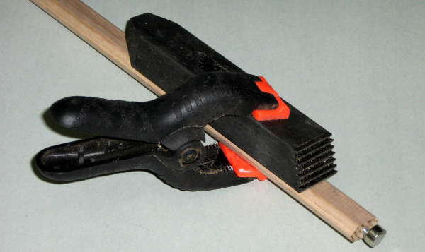
Figure 3 - Test Pendulum Bob With Attachment Device
Another consideration is the length of the pendulum. While a 1 second pendulum is ideal for driving a quartz clock motor, at almost 1 meter in length (994.4mm being the theoretical length for a 1s pendulum) it is rather long. I ultimately decided on a 0.8 second pendulum, but only after the final agonising over the electronics was done. More on this later, but I will answer the obvious question ... how can a quartz motor that expects 1 second intervals operate with a shorter time period?
The answer lies in the electronics. The final clock has no second hand, and simply pulses on four out of every five beats. One beat in five is skipped, so a sensible 636mm pendulum provides the 0.8 second period, and the electronics does the rest. It is also possible to use the electronics to generate 1s periods, but synchronised every 5th beat of the pendulum. This would be more desirable if a seconds hand were employed, but is slightly more difficult to program.
The new bob was made from a very chunky piece of 60mm brass rod that I picked up at the Clock Club's annual auction. After cutting to length, truing in the lathe and drilling the centre hole, the sides were machined flat. Then the pendulum hole was machined out and the rating nut and magnet holder were fabricated. I used an old mainspring barrel with a threaded insert rivetted into the centre. The pendulum has a flat spring on the rear side to ensure the bob sits true, and to prevent any movement. Movement in any part of the pendulum system absorbs power, ruins the Q of the pendulum and requires more drive power to keep it going.
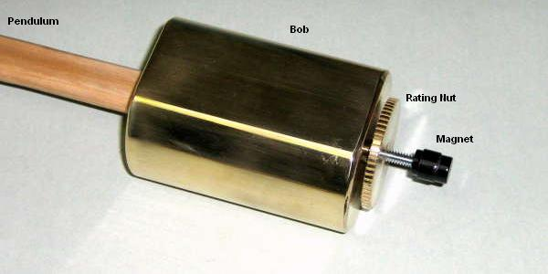
Figure 4 - Final Pendulum, Bob, Rating Nut & Magnet Housing
The magnet housing is steel, and is secured to the threaded rod with a threaded section and locked with a grub screw. Although this does allow the magnet to be positioned accurately above the coil, in reality I've found that positioning is not critical. The magnet is not glued in - it is so powerful that no adhesive is needed (I used a neodymium magnet). The assembly was painted black after assembly, so looks rather nondescript.
There are temperature effects with any pendulum. As the temperature increases, so too does the length of the pendulum and the steel screw supporting the bob. This lowers the bob (slowing the clock), but also moves the magnet closer to the coil. The previous relatively large spacing (~3mm) has now been reduced to about 1mm - so far increased drive power appears to be a non-issue, although this requires the test of time.
The bob is supported from the bottom, and it will expand upwards, either increasing speed or (hopefully) bringing it back to where it should be. Although I didn't go to the trouble of calculating the relative expansion of the materials, it should become fairly obvious quite quickly if there is a temperature compensation problem. It there is, it may have to wait for Mark II (although I have the option of replacing the steel screw with brass to obtain less compensation if this should prove necessary).
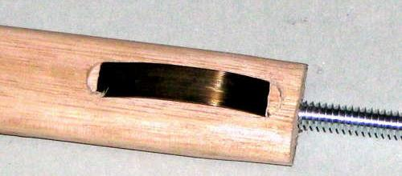
Figure 5 - Pendulum, Showing Anti-Movement Spring
The pendulum rod has a spring inlaid into the reverse side. This takes up the small amount of slack between the rod and bob and prevents movement. The spring is just a short length of old mainspring. The pendulum itself is two pieces of Tasmanian Oak cover strip glued together, and is coated with clear lacquer. The threaded rod is screwed into the end of the pendulum. The hole was tapped first, and the result is extremely secure. (Metal thread screws into timber are surprisingly effective.)
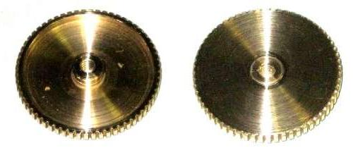
Figure 6 - Rating Nut Detail (Top & Bottom Views)
As noted above, the rating nut used to be the first wheel on a mainspring barrel. The teeth were trimmed down to almost nothing on the lathe, and the centre threaded post is rivetted in position. The final assembly was cleaned up on the lathe after rivetting to remove the hammer marks. Finally, there is the pendulum suspension ...
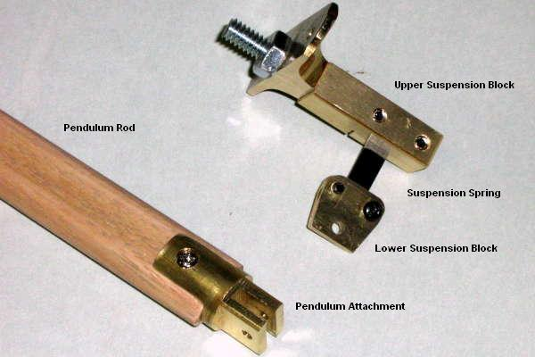
Figure 7 - Pendulum Suspension
The suspension uses just the screw plate of the second drawer-pull as used for the motor coil. The remainder is machined brass, and the suspension spring is clamped in its notch using a pair of 4mm screws. This is now known to be compete overkill, but I can be fairly certain the spring will never fall out. The bottom block is two pieces of 1.5mm brass to clamp the spring, and has a hole for the pendulum attachment. This is not just hooked on, but uses a screw. The next will definitely use a hook, as the screw is a nuisance. The suspension spring itself is 0.2mm x 6.35mm x ~10mm long.
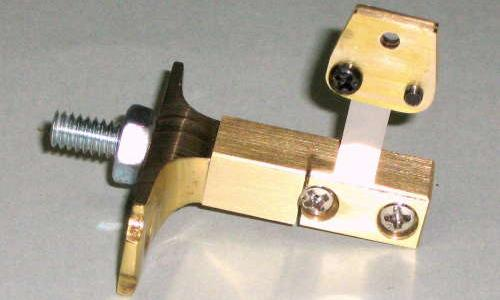
Figure 8 - Upper Suspension Block Detail
To ensure that the upper suspension block is as solid as possible, the assembly is held together with a 1/4" steel metal thread. The projecting part passes through the timber back and through a 3mm thick aluminium plate, as do the two brass mounting screws. The plate spreads the load over a wide area, and the assembly is extremely rigid. The pendulum will swing for almost an hour without impulsing, and at the end of that time, turning on the circuit will eventually return the swing to normal. It usually takes about half an hour for the swing to stabilise after any change (to drive power for example).
The measured swing at the tip of the pendulum (the end of the magnet) was about 24mm, but as noted in the update above has been increased to 90mm. This means that circular error will be about 1.65 seconds/day (see Impulsing the Pendulum for more details). At the time of writing, it seems probable that impulse error is a little higher than expected, and the phase of the coil has been reversed to see if this improves matters. Although the clock is keeping quite good time, I feel that it should be better. The first thing I saw after the coil reversal was a large increase of pendulum swing, so it is obviously the more efficient connection. This demanded that the spacing between magnet and coil be increased to bring the arc back to something more reasonable. The next step will be to re-program the motor drive to deliver a smaller impulse. I have included a diagram of the impulse waveform below - it's quite interesting to see exactly what happens as the magnet passes the coil.
A standard quartz clock movement was used, although it is of relatively early vintage and a little better made than the modern units. Many quartz clock motors do not like a modified pulse width or higher than normal voltage. Using a series resistor to reduce the voltage does not work well, because the motor then has little or no damping to stop the rotor from moving inappropriately. This causes excessive noise and may also result in erratic pulsing. The motor I used was the most reliable of several I tried, and is a bit up-market in that the minute hand is attached with a threaded collar instead of a force fit on a nylon cannon pinion. Finding a suitable dial was also a challenge, but another junk box obtained at the auction produced something at least passable. It will be replaced with something more appropriate once the clock is in its final cabinet (unless I decide otherwise  ).
).
Most quartz clock motors are pretty sloppy, so hand positioning is not very accurate. Between the hour and half hour, the weight of the minute hand causes the hand to "droop", taking up the slack in the movement. This was cured by adding a friction washer stolen from another quartz movement - the hand can only move if driven, and gravity plays no part in the process. The hour hand is far less critical, so although it is affected by gravity this is not very obvious.
The clock motor itself is powered by the same electronics that drive the pendulum, and this provides the alternating pulses with no additional circuitry. The end result turned out to consist on one programmable PIC ("Peripheral Interface Controller") microcontroller - actually a miniature microprocessor. The code is provided below, and there is also a simple flowchart that shows each function.
As noted above, the original idea was to use discrete circuitry. This was largely to preserve the "antiquity" of the project, but I realised soon enough that I was being silly. This is an altogether new project, so it makes sense to use modern parts to provide extra functionality (like skipping every fifth beat) and keep the electronics as simple as possible. While the two transistor motor works very well, the divider and gating needed to reverse the clock motor polarity with each impulse became excessively complex for a simple task. I would also have been stuck with a 1 second pendulum. A half-second pendulum (~249mm) could have been used, but would look out of place with the rather chunky top block and motor unit.
A diagram of the original motor drive is shown below. This works perfectly with a single 1.5V alkaline cell. The PIC needs at least 2.5V to run, so the final design runs off 3V - two cells in series. Current drain is quite low, and a pair of "C" cells will power the clock for more than long enough. Based on the rated capacity of "C" cells (7,800 mA hours) and the measured average current drain of 750uA, the battery should last for 433 days - well over a year.
The two-transistor motor drive is shown below. I was a bit sad to ditch it in favour of the PIC, but pragmatism rapidly overcame sentiment. I have another clock that uses the same type of drive system (but stopped working), so the original circuit might live again after all.
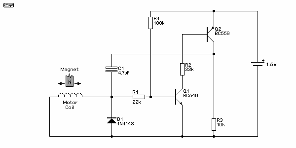
Figure 9A - Original Pendulum Drive Schematic
As you can see, there's not a lot involved. Even with a 1.5V supply, the circuit is easily capable of providing a very healthy impulse. Q1 amplifies the small signal from the coil, and R4 is included to pull the base voltage up so the transistor is just below the voltage where it will start to conduct. When a positive pulse is received from the impulse (motor) coil, Q1 turns on and draws its current through the base of Q2. Now Q2 turns on (causing the voltage across R3 to increase to 1.5V), and C1 couples the signal to the coil and back to Q1. This causes the circuit to be fully conducting in a few microseconds.
Once the magnet has passed and C1 is charged, there is no longer any way for Q1 to remain conducting, because it has no base current. It turns off, and in turn also turns off Q2. Now the voltage at the collector of Q2 (across R3) falls, which forces Q1 to turn off faster. The circuit switches off, again in a few microseconds.
This circuit can be somewhat tempremental, and I have seen situations where it flatly refuses to do anything useful, despite getting a nice healthy impulse from the coil. For the circuit as shown here to work, the coil resistance needs to be fairly high - typically around 2k ohms. There are a couple of changes that can help, and in some cases it won't work at all unless the voltage is increased. It is shown here to give you a basis for further experiments, not as a complete design.
In the following circuit, there is no resistor (the equivalent of R4 above) to raise the base voltage of Q1 almost to conduction, so a fairly large voltage swing from the motor coil is expected. You may need to add a resistor from +1.5V to the base of Q1. A starting value of about 470k should be about right, but don't use it unless you have to.
The alternative drive system shown above is marginally better than the original one in Figure 9A and is slightly less tempermental. Having messed around with a few of these circuits over the past few years, it's become obvious that most of the early transistor drive circuits would have involved quite a bit of trial and error. Almost everything has an effect on how it works ... the coil, magnet, available battery supply (which varies), component variations, etc,. etc. In all cases with these simple drive circuits, expect to experiment. The chances of getting everything right on your first try are slim at best.
If simply driving the pendulum was all that was needed, then the next stage would never have happened, but the circuit above can only pulse the pendulum coil - it can't drive a quartz clock motor or do anything else useful without additional circuitry. To be able to do so using "traditional" electronics leads to a fairly involved circuit needing another 6 transistors, several diodes and many other parts. The alternative would be to use conventional logic ICs, but that would still result in a relatively complex circuit.
By comparison, the next circuit looks as if there's almost nothing in it. Everything is done by the microcontroller and embedded software, and despite the apparent simplicity, it is actually a very complex device. The only down side is that it cannot run from 1.5V, so the circuit must use two 1.5V cells.
The PIC microcontroller I used has configurable pins, and one pin is used as an input (to detect that the magnet is over the coil), and as an output to provide the impulse to the same coil. After an impulse is delivered, the pin remains as an output at zero volts for about 600ms. This places a short circuit across the coil, which improves the impulse slightly, and protects the PIC from any high voltage developed across the coil when the impulse is stopped. Both pendulum and clock motor are impulsed for 50ms, although they can easily be different if needed. Peak impulse power is about 2.25mW, and the average power to the pendulum drive is 140uW.
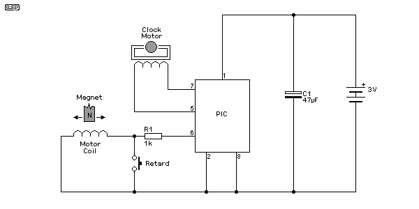
Figure 10 - Complete Clock Schematic
As you can see, the circuit is deceptively simple. The PIC does everything. A retard button is easily added as shown and requires no extra input - it just short-circuits the impulse coil. Because the pendulum will continue to swing for about an hour, a few seconds will retard the clock, but will have little or no effect on the pendulum's swing.
The clock motor is pulsed in exactly the same way as from a quartz clock motor IC. Each pulse is delivered in the opposite polarity from the previous pulse. This is easily achieved, although may not be intuitively obvious. At rest, both clock motor pins are at zero volts. The first pulse is delivered by making (say) pin 5 go high. Current now flows from pin 5, through the clock motor and back to zero via pin 7.
The next pulse makes pin 7 go high, so current now flows from pin 7, through the motor (but in the opposite direction), and back to zero via pin 5. Each pulse is therefore in the opposite direction of the last pulse, so the motor "sees" a normal AC waveform with both positive and negative pulses. Additional circuitry is not needed.
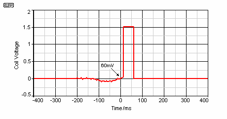
Figure 10A - Motor Drive Waveform
The drive waveform shown above is the signal seen across the coil with an oscilloscope. As the magnet approaches the coil, the voltage swings negative by about 100mV (0.1V). When the magnet is in the exact centre of the coil, the signal returns to zero, becoming positive as the magnet moves off-centre. At about +60mV, the PIC sends a pulse to the coil, providing the impulse. Around 200ms before the impulse, you can see a small amount of noise on the waveform. This is the moment when the short-circuit is removed from the motor, waiting for the next signal as the magnet again swings over the coil.
I originally used the circuit with the coil connected the other way, so the impulse was delivered as the magnet swung towards the centre of the magnet. Although logic would indicate that this should stop the pendulum, it does no such thing. The impulse is delivered more or less vertically, and the tiny lift is sufficient to maintain the swing. Although this connection gave a nice small pendulum arc, the impulse error was sufficient to badly affect timekeeping. The clock had a tendency to run very slightly faster than it should - regardless of the position of the bob.
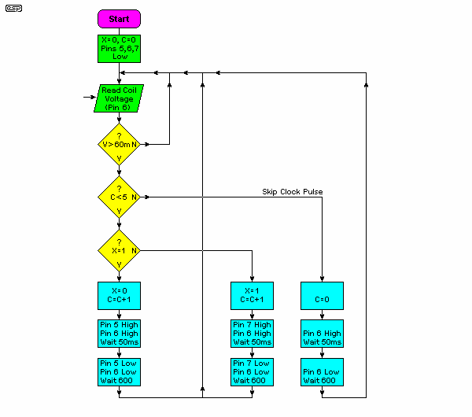
Figure 11 - PIC Program Flow-Chart
The flow chart shows everything that the PIC does. It is very straightforward, although it may not seem that way at first glance. An explanation of each function will assist you to understand the process ...
The whole program only occupies 81 bytes of PIC memory (there are 256 bytes available), so the PIC has plenty of spare capacity. There are also two spare input/output pins available, so adding extra functionality (as discussed below) is ralatively easy to do.
Because software (rather than hardware) is used, modifying the power delivered to the pendulum or the clock motor is simply a matter of re-programming the IC. No physical components need to be changed, so development was simplified dramatically. Once the system as a whole is working properly, there is nothing else that needs to be done (apart from making the case).
The PIC I used for this project is a PICAXE 08M, which has the advantage of being extremely easy to program because it uses an in-built BASIC interpreter. Note that the code shown here is for a 1 second pendulum, so every swing will pulse the quartz motor. The 0.8s pendulum I used is really a compromise that I would not make again.
To use the code shown above, simply highlight it (click inside the text box then press 'CTRL-A' to highlight all), then copy it into the PICAXE editor. You can make changes to suit your application, but please do not ask me to rewrite any part of the code for you. This is something you have to learn and do for yourself.
Because of the programmability of the microcontroller, there are any number of functions that could be added. A larger PIC would be needed because of the extra inputs and outputs, but these are readily available. Just some of the functions that can be added include ...
There are bound to be other functions of course, but most are more easily achieved with existing commercial products. As a hobby, horology is more about fun and learning than trying to duplicate existing products. There is not likely to be much demand for a new pendulum based time-keeper with a plethora of quartz based multi-function clocks already available.
All in all, the project has been lots of fun, and even as it stands is likely to have a long term accuracy approaching that of a quartz clock. I also learned a great deal in the process, having to come to grips with suspension springs, pendulum loss factors, drive power (and circuits), temperature compensation, etc., etc.
The project concept changed several times during the early stages. I still have a modified (but incomplete) movement I originally planned to use with an impulse lever activated by the pendulum. This may (or may not) be put to use at some later stage. The existing gearing may have to be changed though, since it presently requires an impulse every 1.03 seconds (58 teeth on the minute wheel). This means a relatively short pendulum, with just over a 0.5 second period (roughly 250 mm long), or I will need to "reprogram" the wheel by cutting new teeth at a more sensible pitch.
In the meantime, the clock as shown is proving to be an excellent timekeeper, but it will take some time before I'll be able to quantify its overall accuracy. It has the ability to be the most accurate (mechanical) clock I have, and is potentially capable of equalling or exceeding the accuracy of typical quartz clocks. Setting it accurately in the first place is not easy because of the "skipped beat" action of the clock. There really is a lot to be said for using a one second pendulum .
If I ever do decide to build another electrically impulsed clock, the details will eventually be published in the clock section of my website, along with the present version. It seems more likely than not that another will be built, but it will have to wait until I have the spare time.